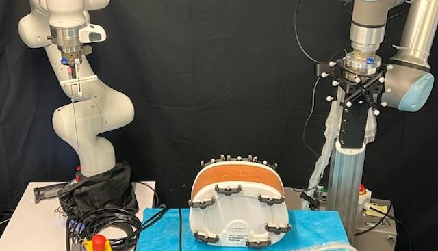
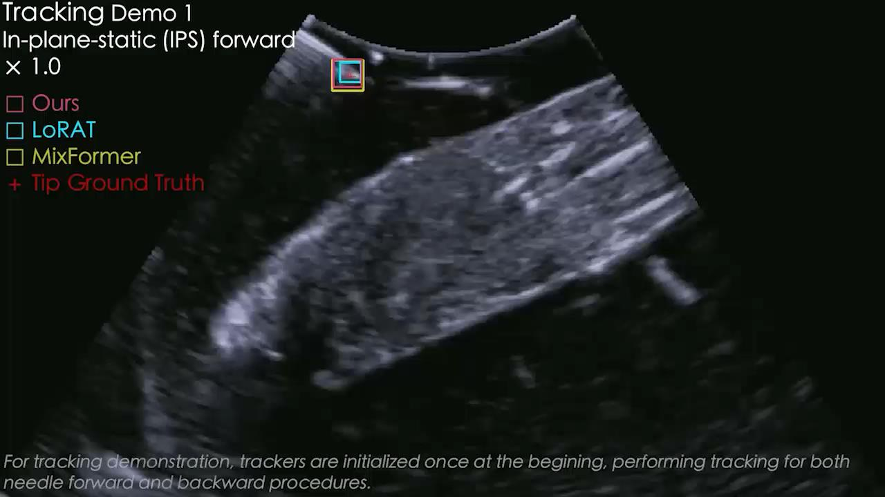

Real-time needle intelligence
See and continuously localize the needle during intervention.

AI · Ultrasound · Robotics · Autonomy
A Vision-Language-Action Robotic System for Ultrasound-Guided Needle Intervention
Perceive. Reason. Act. Bringing large AI models into closed-loop autonomous ultrasound intervention.
What makes SonoPilot different
A continuous loop connects ultrasound perception, procedural reasoning, and physical robotic response.
See and continuously localize the needle during intervention.
Understand procedural context and interact naturally with clinicians.
Translate visual understanding into real-time robotic actions.
SonoPilot closes the loop between perception, reasoning, and physical action.

Embodied intelligence
From ultrasound images to physical robotic action—in real time.
Reported experimental validation
These results are reported for the experimental validation described in the SonoPilot source presentation; they are not clinical-trial results.
Clinical and translational potential
A staged path moves from assistive perception to physician-supervised collaboration and, ultimately, autonomous intervention.
Integrate intelligent needle localization into existing ultrasound workflows.
Enable natural-language interaction and physician-supervised intelligence.
Progress toward closed-loop autonomous needle procedures.